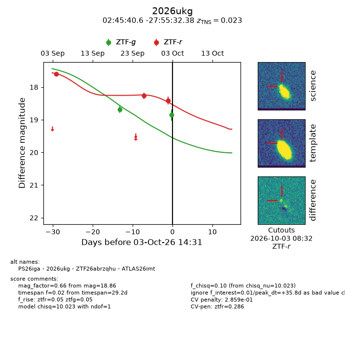
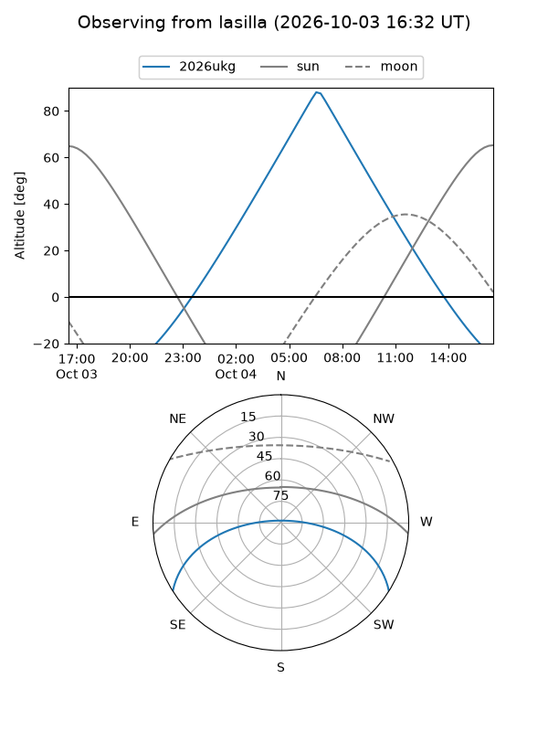
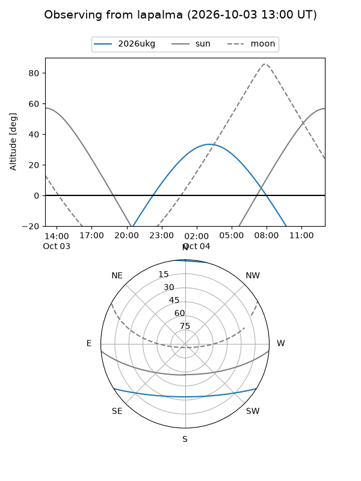
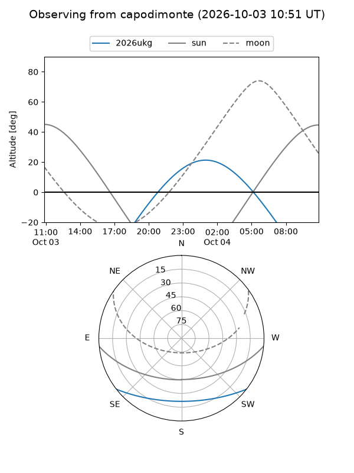
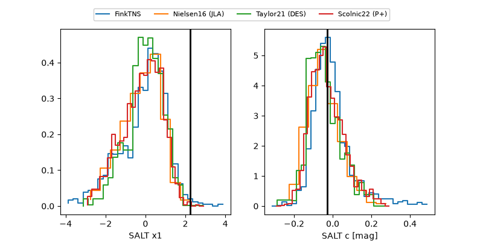

2026ukg
Target 2026ukg at 2026-10-03 14:33
Aliases and brokers:
FINK-ZTF: ztf.fink-portal.org/ZTF26abrzqhu
Lasair-ZTF: lasair-ztf.lsst.ac.uk/objects/ZTF26abrzqhu
ALeRCE-ZTF: alerce.online/object/ZTF26abrzqhu
YSE-PZ: ziggy.ucolick.org/yse/transient_detail/2026ukg
TNS name: wis-tns.org/object/2026ukg
Direct TNS query: direct search
alt names
ZTF26abrzqhu (ztf,fink_ztf)
2026ukg (tns,yse)
ATLAS26imt (atlas)
PS26iga (panstarrs)
Coordinates:
equatorial (ra, dec) = 41.4190,-27.92566
equatorial (HMS+DMS) = 02:45:40.57,-27:55:32.38
galactic (l, b) = (221.4069,-64.71843)
Flags:
TNS type: SN Ia
TNS redshift: 0.0230
peak dt: +35.8
likely cv: !!
Photometry:
last ztfg=18.86, ztfr=18.41
2 ztfg, 3 ztfr detections
Lightcurve

Visibility



Additional plots
